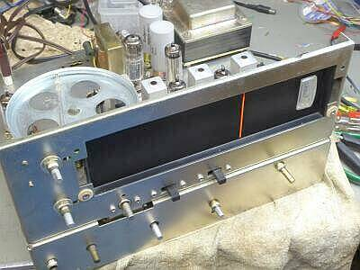 |
いつも通り、清掃をしたのちメンテナンスに取り掛かります
フロント・パネルも外してお掃除です
ＳＷ／ＶＲなど一通り清掃し、メカ部に必要なところはシリコングリスを塗布 |
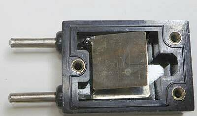 |
思わぬトラブルに遭遇
IFの調整中、1片のクリスタルフィルタが採用されているのですが、本来帯域幅を調整するトリマが、締め付けるほど（容量が増すほど）感度が上がるという事象に遭遇
これは変だ！
その原因は、１６５０KHｚの水晶片
写真上側の足につながる金属板のリードが折れて断線していたものを半田付けしました
ディップメータで発振テストをして、発振しないことから分解することとなりました
|
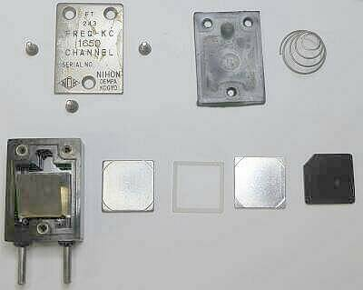 |
FT-２４３型クリスタルの分解写真です
下段中央の半透明に見えるものが水晶片です
ボディにはこれらを両面から挟むようになった金属面があり、これが足につながっています
そうです、「C」結合です
この足につながる金属面の片方が折れて断となっていました
折れていた部分を半田付けし、再組立てしてディップメータで発振を確認して元のソケットに戻しました（組付けにコツがあることがわかりました）
|
| 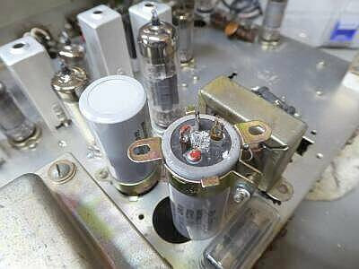 |
ブロックコンデンサ
容量計で測ると正常値を指示しますが、ご覧のように電解液が漏れています
交換です |
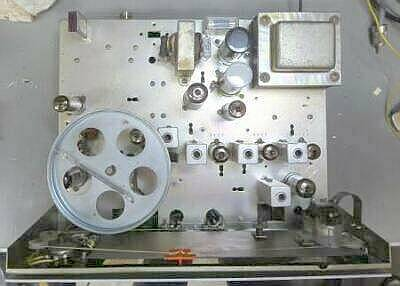 |
ブロックコンデンサを交換しています
黒いものが新たに取り付けたブロックコンデンサです |
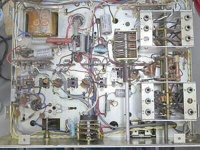 |
シャーシ下側
ＲＦチューンの３連ＶＣ
真ん中のステーターはアースされています
（実際に使ってあるのは前後のステータ）
きっと発振防止策のひとつです
当初、この同調をとることで受信周波数が微妙に変化することに、ここで発振でも起こしているのかと思いました |
|
以下は、電気的に問題を感じた部分です
ここは改造としましたが、大きな改造点はありません
言い方を変えますと、ちょっと手を入れるだけで大きく改善がみられるということです |
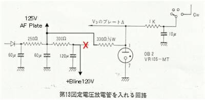 |
オプションのスタビロが組み込まれていました
が、給電電圧が１２０Ｖ足らずで１０５Ｖの定電圧化にはちょっと無理があるようで、具体的には信号強度が変わるとオシレータ＆ＢＦＯ周波数がドリフトします
ＲＦチューンをとると、周波数が変化します
信号強度が増してＡＧＣがかかると、Ｂ電圧が上がる・・・結果ドリフトが生じる、です
これではＳＳＢ／ＣＷの受信に、プロダクト検波を用意しても意味がありません
左図のようにスタビロにかかる電圧を高くかけるように変更して安定化を図りました |
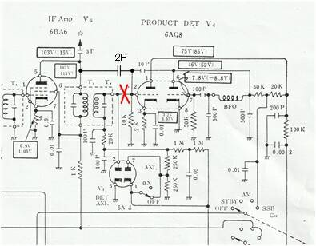 |
ＳＳＢの受信音が良くありません
具体的には、クリッピング歪みが多いというか、とても気になります
その原因は、ＡＭ検波用の６ＡＬ５です
プロダクト検波へのＩＦからの入力を、ＩＦＴの二次側ではなく一次側に変更し、結合を疎にしました
これで、いわゆる良い音でＳＳＢ受信ができるようになりました（ＡＭ受信に比べ、多少音量は下がります） |
| 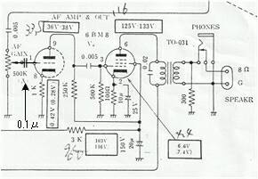 |
ＡＦボリュームを最低に・・・反時計回りに回し切るたびに、カツッという不快な音がします
回路図を見ると、６ＢＭ８ 三極部のＧが直接ＶＲのスライダーに接続されていましたので、０．１μのコンデンサを直列に入れ直流分をカットしました
部品がケチってあった、ということです
これで静かになります |
|
|
以下、写真集です
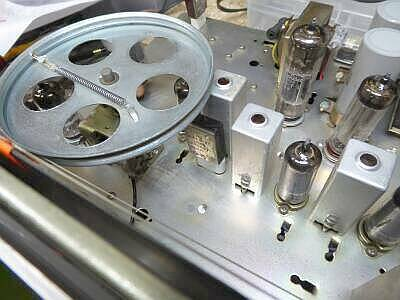 |
特徴的なダイヤル機構
ＶＣが上向きに取り付けられています
中央に見えるクリスタルが、この受信機のＩＦ帯域幅を決める１片式のクリスタルフィルタ/１６５０ＫＨｚの水晶片です
今回は、ＳＳＢ用に調整しましたが、山が２つできてしまい、ＡＭ用には別の調整点がありそうです
Ｔ２の調整をもっとしなくては・・・で、終わっています
|
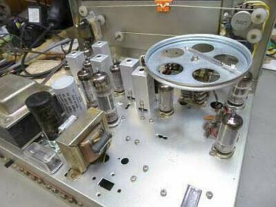 |
下手前に頭が見えているのは、マーカー用３．５ＭＨｚの水晶片
ブロックコンデンサのひとつは入れ替えた現状です |
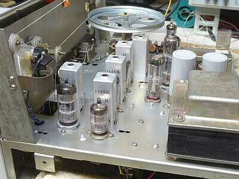 |
こちらはオリジナル（ブロック・コンデンサ交換前）
掃除したら意外ときれいになりました
入手した時点では、シャーシ全体に数ミリものホコリが積もっていました
湿気が少ない状態で保管してあったのが幸いでした |
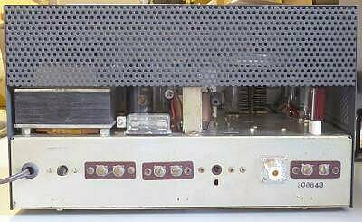 |
背面パネル
Ｍ－Ｒは、今回新たに取り付けたものです
オリジナルでは、アンテナ接続は端子板です
端子板
１．ミュート／スタンバイ
２．スピーカー接続
３．アンテナ接続
真ん中、黒く見える穴はＳメータゼロ点調整ＶＲ
ヒューズ・ホルダは、シャーシ上面に |
|